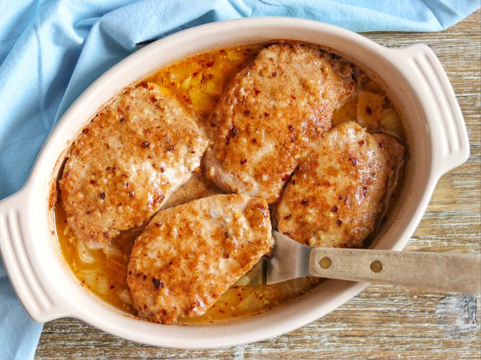

Baked Porkchops

Description
These easy baked pork chops always turn out tender and juicy.
The creamy sauce is delicious served over rice or mashed potatoes — and you probably have all the ingredients on hand.
Ingredients
- 6 thick cut pork chops
- 1 teaspoon garlic powder
- teaspoon seasoning salt
- 2 eggs, beaten
- 1/4 cup all-purpose flour
- 2 cups Italian-style seasoned bread crumbs
- 4 tablespoons olive oil
- 1 (10.5 ounce) can condensed cream of mushroom soup
- 1/2 cup milk
- 1/3 cup white wine
Steps
- Preheat the oven to 350 degrees F (175 degrees C).
- Season pork chops with garlic powder and seasoning salt. Place beaten eggs in a small bowl. Dredge pork chops lightly in flour; dip into beaten egg, then press into bread crumbs to coat both sides.
- Heat oil in a medium skillet over medium-high heat. Add breaded pork chops and cook until golden brown, about 5 minutes per side; transfer to a 9x13-inch baking dish and cover with foil.
- Bake in the preheated oven for 1 hour.
- Meanwhile, mix condensed soup, milk, and white wine in a medium bowl until well combined.
- Pour soup mixture over pork chops.
- Replace the foil, and continue to bake for another 30 minutes.
- Serve hot and enjoy!
Home